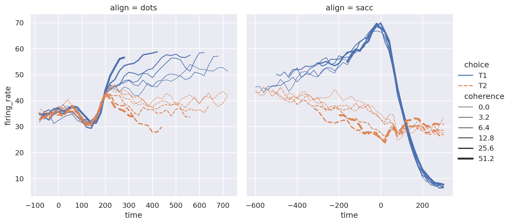
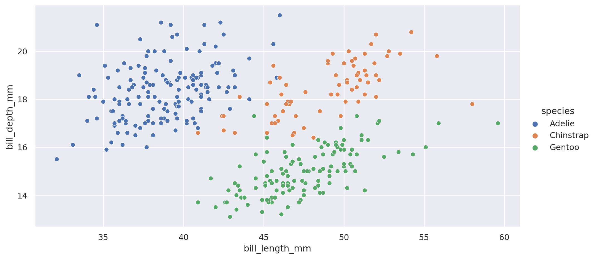
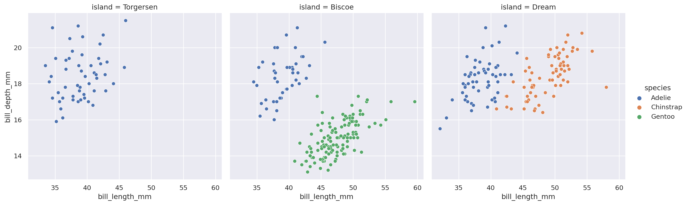
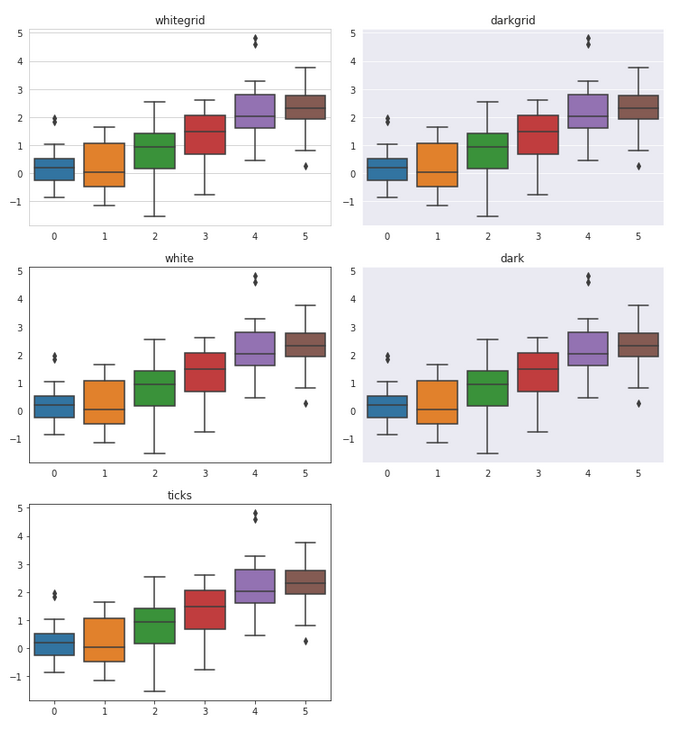

Visualización de Datos (en Python)
Minería de Datos: Preprocesamiento y clasificación
Máster en Ciencias de Datos e Ingeniería de Computadores
Ecosistema de visualización en Python
Ecosistema de visualización en Python
Python es un lenguaje muy usado en Ciencia de Datos, aunque no era su propósito inicial por lo que las librerías de visualización han ido evolucionando. Hay múltiples opciones:
Matplotlib
Inspirada en las funciones de visualización de Matlab.
La mayoría (como seaborn) se basan en esta.
Es demasiado bajo nivel, se puede usar para ajustar al detalle.
Seaborn
Más orientada a Ciencias de Datos.
Permite visualizar directamente DataFrames.
Permite resaltar/distinguir por un atributo o incluso separar por filas y/o columnas usándolo.
Altair
Altair está basada en el Álgebra de Análisis (usado por ejemplo por
ggplot2en R).Si se pilla el ‘truco’ puede ser más intuitivo, pero está algo más limitado.
Bokeh
Bokeh es una librería de visualización usando JavaScript.
Mejor para interactivo.
Plotly
Parte de un ecosistema de una empresa.
Permite compartir entre investigadores (visualiza en servidor).
Se puede combinar con Dash (similar a Shiny in R).
Plotnine
- Plotnine Implementa el interfaz de
ggplot2.- No completamente.
- Presenta interés para quien quiera usar el mismo interfaz que en R.
Veremos
Recomendamos Seaborn y Altair, principalmente.
Ambos: Descriptivos, más alto nivel que matplotlib o pandas. Soportan DataFrames.
Seaborn: Sobre matplotlib.
Altair: Formato web.
En los siguientes ejemplos usaré seaborn.
Para las prácticas podréis usar el que queráis, no limitaros a ellas.
Primeras visualizaciones
Nomenclatura
En la documentación suele aparecer fig y axis, cuidado.
- fig: Es todo el área a pintar (una o varias figuras juntas).
- axis: Es realmente una figura, no unas coordenadas.
Hay un interfaz más básico, pero lo mejor es el moderno, que permite crear fácilmente subfiguras:
Imagen de ejemplo
Se pueden crear varias figuras
Visualizando
Vamos a cargar un dataset clásico y luego analizarlo con visualizaciones.
Uno con datos sobre sueldos.
['wage', 'educ', 'race', 'sex', 'hispanic', 'south', 'married', 'exper', 'union', 'age', 'sector']| wage | educ | race | sex | hispanic | south | married | exper | union | age | sector | |
|---|---|---|---|---|---|---|---|---|---|---|---|
| 0 | 9.0 | 10 | W | M | NH | NS | Married | 27 | Not | 43 | const |
| 1 | 5.5 | 12 | W | M | NH | NS | Married | 20 | Not | 38 | sales |
| 2 | 3.8 | 12 | W | F | NH | NS | Single | 4 | Not | 22 | sales |
Otro dataset son distintos pingüinos. Es un problema de clasificación (specie) similar al iris.
['species', 'island', 'bill_length_mm', 'bill_depth_mm', 'flipper_length_mm', 'body_mass_g', 'sex']| species | island | bill_length_mm | bill_depth_mm | flipper_length_mm | body_mass_g | sex | |
|---|---|---|---|---|---|---|---|
| 0 | Adelie | Torgersen | 39.1 | 18.7 | 181.0 | 3750.0 | Male |
| 1 | Adelie | Torgersen | 39.5 | 17.4 | 186.0 | 3800.0 | Female |
| 2 | Adelie | Torgersen | 40.3 | 18.0 | 195.0 | 3250.0 | Female |
Seaborn
Antes de empezar comento algunas características:
- Las funciones trabajan con un DataFrame, por medio del parámetro
data. - Se puede identificar para cada dimensión, color, tamaño, … el nombre de un atributo.
- Se pueden crear distintas figuras (por filas, columnas, …).
Hay un excelente tutorial online en https://seaborn.pydata.org/tutorial/introduction.html.
Es muy potente:

Posee muchas funciones distintas:
scatterplot: Visualización de instancias como puntos.
lineplot: Visualiza las instancias como puntos.
lmplot: Visualiza como puntos, y lo aproxima.
barplot: Diagramas de barras (incluyendo líneas de error).
swarmplot: Visualiza en forma de violín.
boxplot: Distribución usando boxplot.
…
Sin embargo, es mejor limilarse a tres funciones: 
Se distingue el concreto mediante el parámetro kind.
Ventajas: permite múltiples figuras a la vez según un criterio.
Visualizando sueldos
Se puede añadir como función kde.
O directamente solo el kde:
También podríamos mostrarlo de valor categórico:
Altair
Altair tiene una sintaxis muy homogénea:
Ventajas:
Permite aplicar transformaciones.
Permite poner en una variable expresión (count(), max(), …).
Sintaxis muy homogénea.
La sintaxis es:
Donde mark_xxx puede ser:
- mark_lines: Líneas.
- mark_points: Versión con puntos.
- mark_bar: Diagrama de barras.
- mark_boxplot: Diagrama boxplot.
- …
Definir el tipo de un datos como ‘Variable:Tipo’ indicando el tipo de datos.
Tipo:
- ‘Q’: Valor real.
- ‘O’: Valor ordinal.
- ‘N’: Valor como categórico.
Vamos a visualizar las gráficas anteriores con Altair.
Ahora como líneas.
Ahora como boxplot.
Relación sueldo y formación
Para mostrar diferencias vamos a mostrar el sueldo con los distintas funciones genéricas.
También permite mostrar la media y remarca el 95% del intervalo de confianza.
Directamente se confirma con el box-plot.
Se ve que con mayor nivel educativo mayor es la variabilidad.
En Altair es muy directo:
Otra forma, diagrama de barras:
Se pueden quitar las barras de error:
¿Y si queremos ver las combinaciones más numerosas?
Un nivel educativo de 12 con sueldo inferior a 10 es común.
Diferenciando por más atributos
Si queremos ver la influencia sobre una clase, se puede usar el atributo hue:
Permite repetir la gráfica al lado discriminando por ese atributo.
Añade nuevo color.
Se refleja en la leyenda.
Ejemplo: Distribución considerando el sexo.
Parece diferente por sexo.
El box-plot lo visualiza mejor:
Analizamos con diagrama de barra:
Se ve que el ingreso promedio es mayor para cada nivel formativo.
Subfiguras por criterio
A menudo nos interesa visualizar ciertos datos de forma separada.
Se podría hacer haciendo selecciones usando pandas, pero la librería lo permite.
AVamos a usar el otro datasets, el de los pingüinos.
Primero vamos a mostrar para los tamaños la especie que es
Vamos a visualizar las clases.
sns.relplot(x="bill_length_mm", y="bill_depth_mm", data=penguins,
hue="species", aspect=2)
plt.show()
Tiene pinta de ser bastante separables, de todas formas vamos a analizar por islas.
Podemos usar otros atributos, pero a veces no es claro:
sns.relplot(x="bill_length_mm", y="bill_depth_mm", data=penguins,
hue="species", col="island", aspect=1)
plt.show()
Se observa que el problema es aún más fácil, no en todas las islas están todas las especies.
Se puede limitar usando col_wrap y row_wrap para que no sea tan alargado.
Desde Altair también es fácil.
Mejorando el estilo
Estilo (theme)
Se puede visualizar los themes:
- darkgrid: Formato por defecto (como
ggplot2). - dark: Sin líneas horizontales.
- whitegrid: Blanco con líneas.
- white: Blanco sin líneas.
- ticks: Como white pero con ticks en los ejes.

Renombrar los ejes y/o title
Las funciones devuelven un objeto al que se puede definir los elementos.
Definir atributos, por medio de set:
- xlabel: Etiqueta eje x.
- ylabel: Etiqueta eje y.
Falta la leyenda, se cambia con plt.legend:
Re-etiquetar:
Localización
Usando move_legend
Dado que se pueden crear subfiguras para el título es bueno usar ‘XX.figure.suptitle’.
Personalizando en Altair
Personalizando una gráfica en Altair es más intuitivo, al ser más explícito.
Altair es interactivo:
Altair también permite asociar diagramas:
Altair también permite asociar diagramas:
scale=alt.Scale(zero=False)
brush = alt.selection_interval()
p1=alt.Chart(penguins).mark_point().encode(
x=alt.X('bill_length_mm:Q',scale=scale, title="Longitud (mm)"),
y=alt.Y('bill_depth_mm:Q',scale=scale, title="Profundidad (mm)"),
color=alt.Color('species', title="Especie")
).properties(width=800,height=400).add_selection(brush)
p2=alt.Chart(penguins).mark_bar().encode(
y='species:N',
color='species:N',
x='count(species):O'
).transform_filter(brush)
alt.vconcat(p1,p2)Ejercicios de visualización
Vamos a usar un datasets tips existen datos de consumo en un restaurante. Indica para cada consumición el precio total_bill, la propina y datos del cliente (sex, smoker), el día de la semana, y la hora (Lunch, Dinner).
Ejercicios de visualización
Visualizar la distribución de propinas en función de la factura total.
Igual pero destacando por la hora.
Mostrar la frecuencia distinguiendo por sexo del cliente.
Mostrar la frecuencia distinguiendo por sexo en función de la hora.
Crear el diagrama (lmplot) de la relación propina y factura en función de la hora.
Mostrar en un box-plot la factura en función de la hora.
Igual que el anterior pero distinguiendo por el sexo.
Ejercicios de visualización
Mostrar un kde de la factura distinguiendo por sexo y separando por la hora.
Calcular el ratio y visualizar las facturas y el ratio separando en base a la hora.
¿Ser fumador influye?
¿La hora influye en la factura? ¿Y en el ratio? Visualiza para justificarlo.
Visualizar la distribución del ratio para cada hora.
Crear un diagrama de barras para comparar el ratio promedio por cada sexo para cada hora. ¿La diferencia es relevante?
Crear un diagrama de barras para comparar el ratio promedio por cada sexo separando si es fumador. ¿La diferencia es relevante?
¿Está bien balanceados los experimentos respecto a la hora, el sexo, o si son fumador?
Mejora y “traduce” uno de las gráficas complejas anteriores.